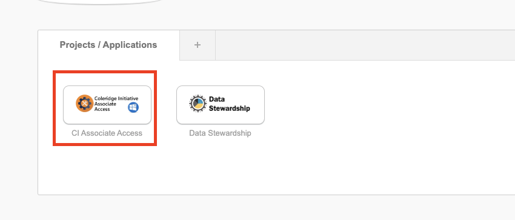
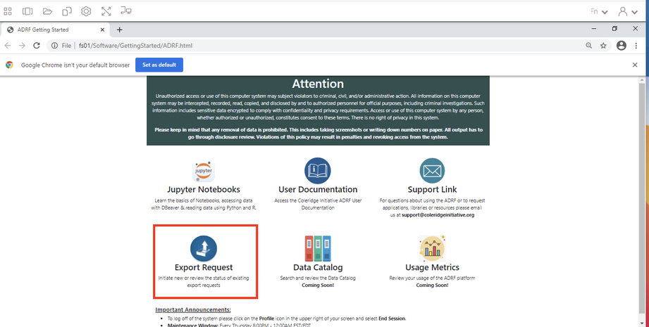
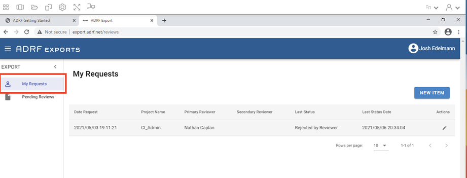
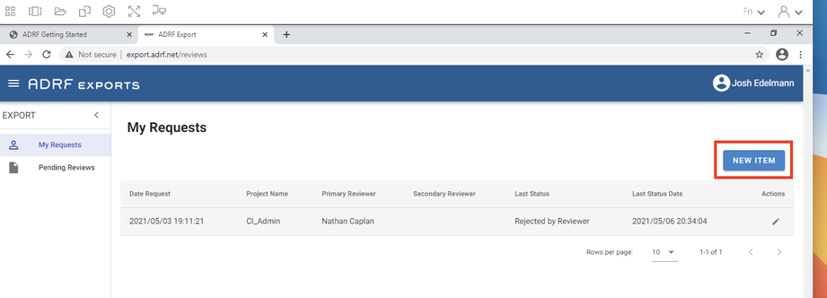
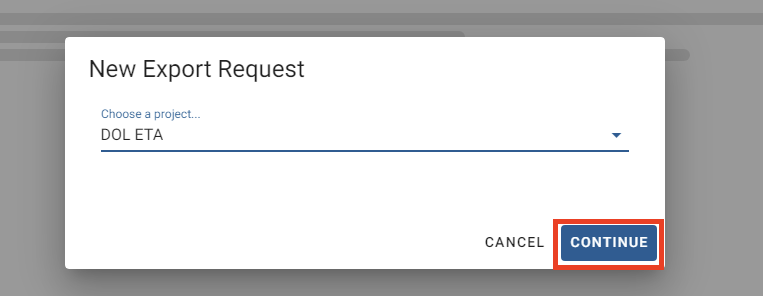
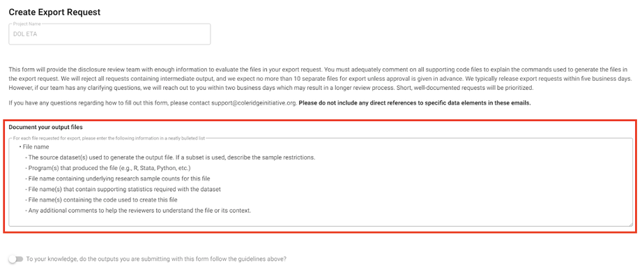
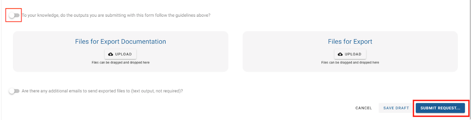

9 Export guidelines
Export Review Guidelines
To provide ADRF users with the ability to draw from sensitive data, results that are exported from the ADRF must meet rigorous standards meant to protect privacy and confidentiality. To ensure that those standards are met, the ADRF Export Review team reviews each request to ensure that it follows formal guidelines that are set by the respective agency providing the data in partnership with the Coleridge Initiative. Prior to moving data into the ADRF from the agency, the Export Review team suggests default guidelines to implement, based on standard statistical approaches in the U.S. government 1,2 as well as international standards 3,4, and 5. The Data Steward from the agency supplying the data works with the team to amend these default rules in line with the agency’s requirements. If you are unsure about the review guidelines for the data you are using in the ADRF or if you have any questions relating to exports, please reach out to support@coleridgeinitiative.org before submitting an export request.
To learn more about limiting disclosure more generally, please refer to the textbook or view the videos.
General Best Practices for a Successful Export
Currently, the review process is highly manual: Reviewers will read your code and view your output files, which may be time-consuming.
Each additional release adds disclosure risk and therefore limits subsequent releases; we ask that users limit the number of files they request to export to just the outputs necessary to produce a particular report or paper. If you are requesting an export of more than 10 files, there may be an additional charge.
The reviewers may ask you to make changes to your code or output to meet the requirements of guidelines that have been given by the providers of the data in the ADRF. Thus, we strongly encourage you to produce all output files—tables with rounded numbers, graphs with titles, and so forth—through code, rather than manually.
We ask that you only request review of final versions of output files, rather than in-progress versions. Any file containing intermediate output will be rejected.
Every code file should have a header describing the contents of the file, including a summary of the data manipulation that takes place in the file (e.g., regression, table or figure creation, etc.).
Documenting code by using comments throughout is helpful for disclosure reviews. The better the documentation, the faster the turnaround of export requests. If data files are aggregated, please provide documentation on the level of aggregation and for where in the code the aggregation takes place.
To help reviewers, who may not have seen your code before, we ask that users create meaningful variable names. For instance, if you are calculating outflows, it is better to name the variable “outflows” than to name it “var1.”
Timelines for Export Process
Coleridge reviewers have five business days to complete an export from the day you submit an export request. However, timelines may differ depending on your agency, so please refer to your specific agency’s guidelines.
The review process can be delayed if the reviewer needs additional information or if the reviewer needs you to make changes to your code or output to meet the ADRF nondisclosure requirements.
Export Review Process
The ADRF Export Review process typically involves two main stages:
- Primary Review:
This is an initial, cursory review of your documentation and exports to ensure they do not include micro-data. A primary review can take up to 5 business days, so please plan accordingly when submitting your materials.
In cases where the reviewer has questions or requires additional information, the primary review may extend beyond 5 business days.
- Secondary Review:
This is a comprehensive review conducted by an approved Data Steward who has content knowledge for the data permissioned to your workspace.
If your submission pertains to multiple data assets, it will require approval by each Data Steward before the material can be exported from the ADRF.
How to Check Your Export Review Status:
If you’ve submitted an export request, you can easily check the status of your submission by following these steps:
Log into the ADRF.
Open the ADRF Export module.
Status Descriptions:
To help you better understand the different stages of the Export Review process, here are the status descriptions you may encounter:
- Awaiting Reviewer:
Your export is currently under primary review. If any issues arise during the primary review, your reviewer will notify you. Upon completion of the primary review, the secondary reviewer(s) will be notified.
- Awaiting Secondary Review:
Your export is currently under secondary review. If your submission pertains to multiple data assets, it will require a review by each Data Steward before being approved.
Preparing Data for Export
Each agency has specific disclosure review guidelines, especially with respect to the minimum allowable cell sizes for tables. Refer to these guidelines when preparing export requests. If you are unsure of what guidelines are in place for the dataset with which you are working in the ADRF, please reach out to support@coleridgeinitiative.org.
Tables
Cell Sizes
For individual-level data, please report the number of observations from each cell. For individual-level data, the default rule is to suppress cells with fewer than 10 observations, unless otherwise directed by the guidelines of the agency that provided the data.
If your table includes row or column totals or is dependent on a preceding or subsequent table, reviewers will need to take into account complementary disclosure risks—that is, whether the tables’ totals, or the separate tables when read together, might disclose information about individuals in the data in a way that a single, simpler table would not. Reviewers will work with you by offering guidance on implementing any necessary complementary suppression techniques.
Weighted Data
- If weighted results are to be exported, you must report both weighted and unweighted counts.
Ratios
- If ratios are reported, please report the number of valid cases for both the numerator and the denominator (e.g., number of men in state X and number of women in state X, in addition to the ratio of women in state X).
Percentiles
- Do not report exact percentiles. Instead, for example, you may calculate a “fuzzy median,” by averaging the true 45th and 55th percentiles.
Percentages
- For any reported percentages or proportions, the underlying counts of individuals contributing to the numerators and denominators must be provided for each statistic in the desired export.
Maxima and Minima
Suppress maximum and minimum values in general.
You may replace an exact maximum or minimum with a top-coded value.
Graphs
Graphs are representations of tables. Thus, for each graph (which may have, e.g., a jpg, pdf, png, or tif extension), provide the source data of the underlying table of the graph following the guidelines for tables above.
Because graphs and other figures take the most time to review, the number of generated graphs should be as low as possible. Please consider the possibility that you could export the underlying table instead, and generate the graph in another package.
If a graph is produced from aggregated data or from tables that have been disclosure-proofed following the guidelines above (e.g., bar charts of magnitudes), provide the underlying tables.
If a graph is produced directly from unit-record data but aggregated in the visualization (e.g., frequency histograms), provide the underlying tables.
If a graph is produced directly from unit-record data and displays unit-record values (e.g., scatterplots, plots of residuals), the graph can be released only after you ensure that individuals cannot be re-identified and that values can only be estimated with a high level of uncertainty. Further processing to meet this requirement can include, but is not restricted to, cutting off the tails of a distribution, removing outliers, jittering the actual values, and removing or modifying axis values.
If a graph is produced from the results of modeling or derivation and uses the unit-record data (e.g., regression curves), the graph can be released only if the values cannot be used to find original data values.
Graphs of this type are generally automatically cleared.
For precision/recall graphs, you will need to report the sample size used to generate your model(s).
Model Output
- Output from regression or machine-learning models generally does not pose a risk of disclosing personally identifiable information, as long as the models are not based on small samples. Provide the counts for each variable that produces the model output. If categorical variables are used then provide the counts for each category.
Submitting an Export Request
To request an export be reviewed, please watch the following video or follow the instructions below:
Click here: http://adrf.okta.com (ADRF 3).
Input your login credentials.
Verify yourself with Okta (download Okta Verify on your smartphone or other device).
Choose your project as seen in the photo below. For the purpose of this document, you are seeing the Coleridge Initiative Associate Access project.

Select Desktop and login with the same credentials you had done previously.
Upon entering the ADRF, a chrome page will appear as shown in the photo below. On this page, click Export Request in the bottom left corner. Or, from the ADRF desktop, open Google Chrome and navigate to export.adrf.net. (Note: export.adrf.net is an address that will only work within the ADRF desktop).

- Click My Requests, or the top (person-shaped) icon, at the left side of the window as shown in the screenshot below.

- Click New Item as shown below

You will be asked to select the project to which your export relates. If you do not see the correct project listed in the dropdown list, please reach out to our support team at support@coleridgeinitiative.org.
After selecting a project, click Continue.

- Read through the entire page that loads. This page, titled “Create Export Request,” will ask for you to comment on all supporting code files to explain the commands used to generate the files in the export request. The Export Review team will reject all requests containing intermediate output, and there should be no more than 10 separate files for export unless approval is given in advance. The Export Review team will typically release export requests within five business days. However, if the team has any clarifying questions, this could result in a longer review process. You need to document your output files in the text box provided. See the example below:

- When you have read through and followed the page instructions, and are ready to proceed:
Move the slider at the bottom of the page to indicate that you have followed the page’s guidelines.
At the bottom of the page, upload each of the files that you have prepared.
Click Submit Request… to create the export request.

You can click
My Requestsat the left side of the window to view your current and previous export requests.- To learn more about exporting results, please watch these videos.